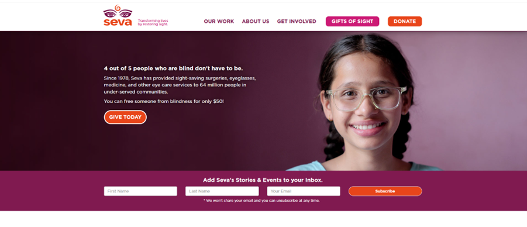
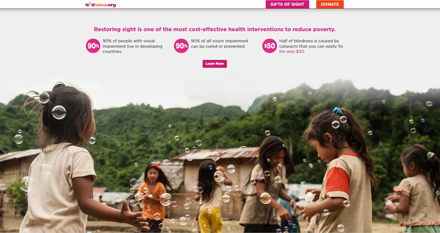
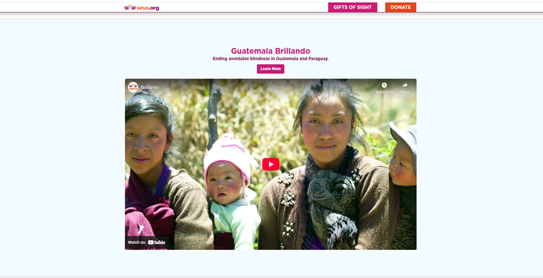
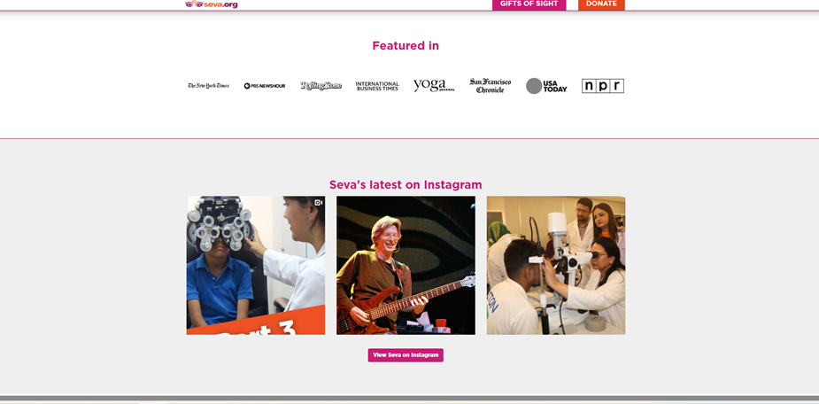
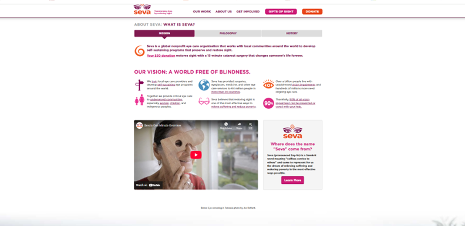

Analysis was conducted based on CRAP principles:
The font size of 'seva.org' is unlike other website that I have been on. The organization's name and logo are small compared to other websites such as Unesco or World health organization.
Although I do think the logo design does capture viewer attention.
The contrast of orange for certain tabs like donate, give today and subscribe establish a pattern for the viewer that these are tabs for those who want to engage with the organization.
The background of white against which the image in a colored rectangle is layed out.
As we navigate the website the 'Heading 2' use "deep pink" color against a white background. When colored background is used then white colored font is used against colored background .
As we navigate the website the Visual Elements have the same treatment and caption style. The brand / website logo and tag line is present on the top of the page left hand corner and the tabs labelled "gift of sight" and "donate" making them constant icon and reminder of the purpose of the website.
Repetition of the colors and font size for headings and content provided enables the viewer to scan through the website effectively. The Seva website does this very well.
As a viewer scrlling down to the contents on the main page of the website, alignment of content was interesting to observe.
The first image on the website is in a rectangular box that works as a frame for the text and image. The text is 'left edge aligned' and image is 'right edge aligned' in the rectangle. Though, the rectangle is centered on the page.
The end of the first page, the text is left aligned and the image is to the right without a rectangle frame or colored background.
Subsequent visuals are center-aligned with the heading above the image are also centered.
Visual Alignment in the webpage seems to have been paid attention to such as :


Visual Grouping is evident as Headings sre placed near their
corresponding content meadning that the headings are relevant to the supporting information.
White space or very pale color (similar to white) space are used to separate different topics. This enables a viewer the ability to visually know that content topic is changing. White spaces and use of color space have been used appropriately to mark clear breaks between content sections and indication of topic change. different types of information
In the "ways to give" tab distinct spacing for different types of information has been used. Same thing with the "get involved tab.
Functional Grouping in the "get involved tab" permits viewer the ability to navigate the different ways to support Seva.org. On thsi page, the navigation elements grouped together.
The contact information or metadata grouped consistently on each page.

